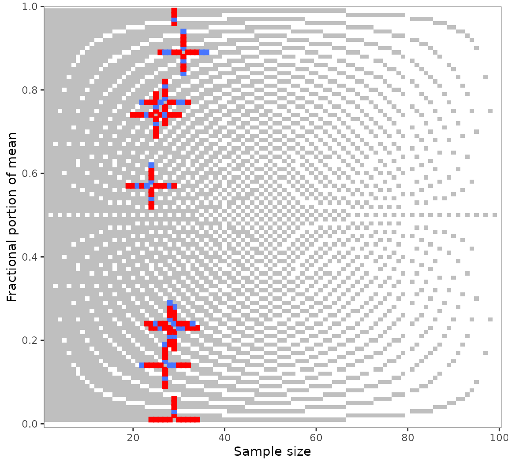

Granularity-related inconsistency of means, or GRIM, is a test for the mathematical consistency of reported means or proportions with the corresponding sample size (Brown and Heathers 2017). It can be applied to summary statistics of discrete numerical distributions. GRIM answers a simple question: Is it possible that a granular distribution has both the reported mean or percentage and the reported sample size?
This vignette covers scrutiny’s implementation of the GRIM test. It has the following sections — to get started, though, you only need the first one:
The basic
grim()function and a specialized mapping function,grim_map().Testing sequences of means or proportions.
The
audit()method for summarizinggrim_map()’s results.The visualization function
grim_plot().Statistical benchmarks, such as granularity and the probability of GRIM inconsistency.
Basic GRIM testing
Few cases: grim()
To test if a reported mean of 5.27 on a granular scale is GRIM-consistent with a sample size of 43, run this:
grim(x = "5.27", n = 43)
#> 5.27
#> FALSENote that x, the reported mean, needs to be a string.
The reason is that strings preserve trailing zeros, which can be crucial
for GRIM-testing. Numeric values don’t, and even converting them to
strings won’t help. A workaround for larger numbers of such values,
restore_zeros(), is discussed in
vignette("wrangling").
grim() has some further parameters, but all of them can
be used from within grim_map(). The other parameters will
be discussed in that context because grim_map() is often
the more useful function in practice. Furthermore, although
grim() is vectorized, grim_map() is more safe
and convenient for testing multiple combinations of means/proportions
and sample sizes.
Many cases: grim_map()
If you want to GRIM-test more than a handful of cases, the
recommended way is to enter them into a data frame and to run
grim_map() on the data frame. Two different ways to do that
are discussed in vignette("wrangling"), but here, I will
only describe an easily accessible solution for a single table.
Copy summary data from a PDF file and paste them into
tibble::tribble(), which is available via scrutiny:
flying_pigs1 <- tibble::tribble(
~x,
"8.97",
"2.61",
"7.26",
"3.64",
"9.26",
"10.46",
"7.39"
) %>%
dplyr::mutate(n = 28)Use RStudio’s multiple cursors to draw quotation marks around all the
x values, and to set commas at the end. See
vignette("wrangling"), section With copy and
paste, if you are not sure how to do that.
Now, simply run grim_map() on that data frame:
grim_map(flying_pigs1)
#> # A tibble: 7 × 4
#> x n consistency probability
#> <chr> <dbl> <lgl> <dbl>
#> 1 8.97 28 FALSE 0.72
#> 2 2.61 28 TRUE 0.72
#> 3 7.26 28 FALSE 0.72
#> 4 3.64 28 TRUE 0.72
#> 5 9.26 28 FALSE 0.72
#> 6 10.46 28 TRUE 0.72
#> 7 7.39 28 TRUE 0.72The x and n columns are the same as in the
input. By default, the number of items composing the mean
is assumed to be 1. The main result, consistency, is the
GRIM consistency of the former three columns. On the
probability column, see section The probability of GRIM
inconsistency.
Scale items
If a mean is composed of multiple items, set the items
parameter to that number. Below are hypothetical means of a three-items
scale. With the single-item default, half of these are wrongly flagged
as inconsistent:
jpap_1 <- tibble::tribble(
~x,
"5.90",
"5.71",
"3.50",
"3.82",
"4.61",
"5.24",
) %>%
dplyr::mutate(n = 40)
jpap_1 %>%
grim_map() # default is wrong here!
#> # A tibble: 6 × 4
#> x n consistency probability
#> <chr> <dbl> <lgl> <dbl>
#> 1 5.90 40 TRUE 0.6
#> 2 5.71 40 FALSE 0.6
#> 3 3.50 40 TRUE 0.6
#> 4 3.82 40 TRUE 0.6
#> 5 4.61 40 FALSE 0.6
#> 6 5.24 40 FALSE 0.6Yet, all of them are consistent if the correct number of items is stated:
jpap_1 %>%
grim_map(items = 3)
#> # A tibble: 6 × 4
#> x n consistency probability
#> <chr> <dbl> <lgl> <dbl>
#> 1 5.90 120 TRUE 0
#> 2 5.71 120 TRUE 0
#> 3 3.50 120 TRUE 0
#> 4 3.82 120 TRUE 0
#> 5 4.61 120 TRUE 0
#> 6 5.24 120 TRUE 0It is also possible to include an items column in the
data frame instead:
jpap_2 <- tibble::tribble(
~x, ~items,
"6.92", 1,
"3.48", 1,
"1.59", 2,
"2.61", 2,
"4.04", 3,
"4.50", 3,
) %>%
mutate(n = 30)
jpap_2 %>%
grim_map()
#> # A tibble: 6 × 4
#> x n consistency probability
#> <chr> <dbl> <lgl> <dbl>
#> 1 6.92 30 FALSE 0.7
#> 2 3.48 30 FALSE 0.7
#> 3 1.59 60 FALSE 0.4
#> 4 2.61 60 FALSE 0.4
#> 5 4.04 90 TRUE 0.1
#> 6 4.50 90 TRUE 0.1Percentage conversion
An underappreciated strength of GRIM is testing percentages. Since these are actually decimal numbers inflated by a factor of 100, percentages come with two “free” decimal places. However, percentages are often reported with decimal places beyond those two, which increases the probability of GRIM-inconsistencies unless true values were correctly reported.
Both grim() and grim_map() have a
percent parameter which, if set to TRUE,
divides the x values by 100 and increases the decimal count
by two, so that percentages can be tested just like means:
jpap_3 <- tibble::tribble(
~x, ~n,
"32.5", 438,
"35.6", 455,
"21.7", 501,
"39.3", 516,
)
jpap_3 %>%
grim_map(percent = TRUE)
#> ℹ `x` converted from percentage
#> # A tibble: 4 × 4
#> x n consistency probability
#> <chr> <dbl> <lgl> <dbl>
#> 1 0.325 438 FALSE 0.562
#> 2 0.356 455 TRUE 0.545
#> 3 0.217 501 FALSE 0.499
#> 4 0.393 516 TRUE 0.484Reconstructed values
Set show_rec to TRUE if you want the values
that were reconstructed during GRIM-testing to be displayed in the
output. They will be columns prefixed with rec_:
pigs1 %>%
grim_map(show_rec = TRUE) %>%
dplyr::select(4:8) # output cut down for printing
#> # A tibble: 12 × 5
#> probability rec_sum rec_x_upper rec_x_lower rec_x_upper_rounded_up
#> <dbl> <dbl> <dbl> <dbl> <dbl>
#> 1 0.68 231. 7.25 7.22 7.25
#> 2 0.75 118. 4.76 4.72 4.76
#> 3 0.71 152. 5.24 5.21 5.24
#> 4 0.76 61.7 2.58 2.54 2.58
#> 5 0.73 183. 6.78 6.74 6.78
#> 6 0.72 75.0 2.71 2.68 2.71
#> 7 0.71 203. 7.03 7.00 7.03
#> 8 0.74 192. 7.38 7.35 7.38
#> 9 0.73 84.8 3.15 3.11 3.15
#> 10 0.69 214. 6.90 6.87 6.9
#> 11 0.75 125 5.00 5.00 5
#> 12 0.72 6.72 0.250 0.214 0.25The additional columns are —
rec_sum: the sum total from which the mean or proportion was ostensibly derived.rec_x_upper: the upper reconstructedxvalue.rec_x_lower: the lower reconstructedxvalue.rec_x_upper_rounded_up: therec_x_uppervalue rounded up.rec_x_upper_rounded_down: therec_x_uppervalue rounded down.rec_x_lower_rounded_up: therec_x_lowervalue rounded up.rec_x_lower_rounded_down: therec_x_lowervalue rounded down.
The last four columns depend on rounding. Here, they
follow the default "up_or_down", leading to two columns for
each of rec_x_upper and rec_x_lower. With a
singular rounding procedure, such as "up",
there would only be one column each, and thus, two in total. The
difference between these numbers is not greatly important, however,
because rounding up and down mostly delivers the same results.
Internally, GRIM-consistency is determined by whether or not a stated
x value is near-identical to either
rec_x_upper_rounded or rec_x_lower_rounded.
This algorithm follows the charitable and conservative protocol outlined
by Brown and Heathers (2017). The rec_* columns were
inspired by Bauer and Francis (2021)’s
Table 1 but present values in slightly different ways.
Summarizing results with audit()
Following up on a call to grim_map(), the generic
function audit() summarizes GRIM test results:
flying_pigs1 %>%
grim_map() %>%
audit() %>%
dplyr::select(1:5) # output cut down for printing
#> # A tibble: 1 × 5
#> incons_cases all_cases incons_rate mean_grim_prob incons_to_prob
#> <int> <int> <dbl> <dbl> <dbl>
#> 1 3 7 0.429 0.72 0.595These columns are —
incons_cases: number of GRIM-inconsistent value sets.all_cases: total number of value sets.incons_rate: proportion of GRIM-inconsistent value sets.mean_grim_prob: average probability of GRIM inconsistency.incons_to_prob: ratio ofincons_ratetomean_grim_prob.testable_cases: number of GRIM-testable value sets (i.e., those with a positive probability).testable_rate: proportion of GRIM-testable value sets.
Visualizing results with grim_plot()
There is a specialized visualization function for GRIM test results,
grim_plot():
jpap_5 <- tibble::tribble(
~x, ~n,
"7.19", 28,
"4.56", 34,
"0.42", 27,
"1.31", 25,
"3.48", 34,
"4.27", 29,
"6.21", 30,
"3.11", 18,
"5.39", 36,
"5.66", 18,
)
jpap_5 %>%
grim_map() %>%
grim_plot()
grim_plot() can only be called on
grim_map()’s output. It will fail otherwise:
grim_plot(mtcars)
#> Error in `grim_plot()`:
#> ! `grim_plot()` needs GRIM or GRIMMER test results.
#> ✖ `data` is not the output of `grim_map()`, `grim_map_seq()`, or
#> `grim_map_total_n()`; or of the respective `grimmer_*()` functions.
#> ℹ The only exception is an "empty" plot that shows the background raster but no
#> empirical test results. Create such a plot with `show_data = FALSE`.With its unusual optics, this plot will probably not fit everyone’s
taste. The results of grim_plot() are like those of error
detection in general: They are not pretty, but they put the unvarnished
truth on display.
The plot is strictly based on the laws governing GRIM. Its background
raster shows all consistent (light) and inconsistent (dark) value pairs
for two decimal places. Empirical values are shown in blue if consistent
and red if inconsistent. Color settings and other ggplot2-typical
options are available via arguments. Read about them at
grim_plot()’s documentation.
You might notice the light vertical lines at
and
:
Few values are flagged as inconsistent here. This reflects
grim_map()’s charitable default of accepting values rounded
either up or down from 5. If a different rounding
specification is chosen in the grim_map() call, the plot
raster will adjust automatically (although it will often be the same as
before):

All rounding values other than up_from,
down_from, and up_from_or_down_from are
supported.
Speed is not much of a concern here because all the rasters are based on data already stored within the package (in R/sysdata.rda), so they don’t need to be generated on the spot every time the function is called. See R/data-gen.R for the way they were generated.
Testing numeric sequences with grim_map_seq()
GRIM analysts might be interested in a mean or percentage value’s
numeric neighborhood. Suppose you found multiple GRIM inconsistencies as
in out example pigs1 data. You might wonder whether they
are due to small reporting or computing errors.
Use grim_map_seq() to GRIM-test the values surrounding
the reported means and sample sizes:
out_seq1 <- grim_map_seq(pigs1)
out_seq1
#> # A tibble: 160 × 7
#> x n consistency probability diff_var case var
#> <chr> <int> <lgl> <dbl> <int> <int> <chr>
#> 1 4.69 25 FALSE 0.75 -5 1 x
#> 2 4.70 25 FALSE 0.75 -4 1 x
#> 3 4.71 25 FALSE 0.75 -3 1 x
#> 4 4.72 25 TRUE 0.75 -2 1 x
#> 5 4.73 25 FALSE 0.75 -1 1 x
#> 6 4.75 25 FALSE 0.75 1 1 x
#> 7 4.76 25 TRUE 0.75 2 1 x
#> 8 4.77 25 FALSE 0.75 3 1 x
#> 9 4.78 25 FALSE 0.75 4 1 x
#> 10 4.79 25 FALSE 0.75 5 1 x
#> # ℹ 150 more rowsSummaries with audit_seq()
As this output is a little unwieldy, run audit_seq() on
the results:
audit_seq(out_seq1)
#> # A tibble: 8 × 12
#> x n consistency hits_total hits_x hits_n diff_x diff_x_up diff_x_down
#> <chr> <int> <lgl> <int> <int> <int> <int> <int> <int>
#> 1 4.74 25 FALSE 4 2 2 2 2 -2
#> 2 5.23 29 FALSE 6 3 3 1 1 -2
#> 3 2.57 24 FALSE 6 3 3 1 1 -3
#> 4 6.77 27 FALSE 7 3 4 1 1 -3
#> 5 7.01 29 FALSE 3 3 0 1 2 -1
#> 6 3.14 27 FALSE 6 3 3 1 1 -3
#> 7 6.89 31 FALSE 8 4 4 1 1 -2
#> 8 0.24 28 FALSE 6 3 3 1 1 -3
#> # ℹ 3 more variables: diff_n <int>, diff_n_up <int>, diff_n_down <int>Here is what the output columns mean:
xandnare the original inputs, reconstructed and tested forconsistencyhere.hitsis the number of GRIM-consistent value combinations found within the specifieddispersionrange.diff_xreports the absolute difference betweenxand the next consistent dispersed value (in dispersion steps, not the actual numeric difference).diff_x_upanddiff_x_downreport the difference to the next higher or lower consistent value, respectively.diff_n,diff_n_up, anddiff_n_downdo the same forn.
The default for dispersion is 1:5, for five
steps up and down. When the dispersion sequence gets
longer, the number of hits tends to increase:
out_seq2 <- grim_map_seq(pigs1, dispersion = 1:10)
audit_seq(out_seq2)
#> # A tibble: 8 × 12
#> x n consistency hits_total hits_x hits_n diff_x diff_x_up diff_x_down
#> <chr> <int> <lgl> <int> <int> <int> <int> <int> <int>
#> 1 4.74 25 FALSE 12 6 6 2 2 -2
#> 2 5.23 29 FALSE 12 6 6 1 1 -2
#> 3 2.57 24 FALSE 11 6 5 1 1 -3
#> 4 6.77 27 FALSE 11 6 5 1 1 -3
#> 5 7.01 29 FALSE 6 6 0 1 2 -1
#> 6 3.14 27 FALSE 13 6 7 1 1 -3
#> 7 6.89 31 FALSE 12 6 6 1 1 -2
#> 8 0.24 28 FALSE 13 6 7 1 1 -3
#> # ℹ 3 more variables: diff_n <int>, diff_n_up <int>, diff_n_down <int>Visualizing GRIM-tested sequences
It’s curious what happens when we plot the output of
grim_map_seq(). Like regular GRIM plots, however, it does
give us a sense of how many tested values are consistent:
grim_plot(out_seq1)
The crosses appear because grim_map_seq() creates
sequences around both x and n. Restrict this
process to any one of these with the var argument:
out_seq1_only_x <- grim_map_seq(pigs1, var = "x")
out_seq1_only_n <- grim_map_seq(pigs1, var = "n")
grim_plot(out_seq1_only_x)
grim_plot(out_seq1_only_n)
Handling unknown group sizes with
grim_map_total_n()
Problems from underreporting
Unfortunately, some studies that report group averages don’t report
the corresponding group sizes — only a total sample size. This makes any
direct GRIM-testing impossible because only x values are
known, not n values. All that is feasible here in terms of
GRIM is to take a number around half the total sample size, go up and
down from it, and check which hypothetical group sizes are
consistent with the reported group means.
grim_map_total_n() semi-automates this process, motivated
by a recent GRIM analysis (Bauer and Francis
2021).
The study examined by Bauer and Francis (2021) reported means of 5.3 and 4.71 for a total sample size of 40. With equal group sizes (i.e., 20 in each group), only 5.3 is GRIM-consistent, not 4.71. However, Bauer and Francis looked for a plausible scenario in which both means were consistent. They checked if those scenarios came about if the 40 participants were distributed across the two groups in slightly different ways.
More precisely, they went from a 20/20 group split to a 19/21 split, then to an 18/22 split, and finally to a 17/23 split. In the latter scenario, both means are consistent if 17 is paired with 4.71 and 23 with 5.3.
Semi-automated solution
Instead of going about this manually, call
grim_map_total_n(), followed by
audit_total_n() for summarizing the results. It will find
two further plausible scenarios in which both means are consistent; more
on that below.
df <- tibble::tibble(x1 = "4.71", x2 = "5.3", n = 40)
# Detailed results:
df_tested <- grim_map_total_n(df)
df_tested
#> # A tibble: 24 × 8
#> x n n_change consistency both_consistent probability case dir
#> <chr> <int> <int> <lgl> <lgl> <dbl> <int> <fct>
#> 1 4.71 20 0 FALSE FALSE 0.8 1 forth
#> 2 5.3 20 0 TRUE FALSE 0 1 forth
#> 3 4.71 19 -1 FALSE FALSE 0.81 1 forth
#> 4 5.3 21 1 TRUE FALSE 0 1 forth
#> 5 4.71 18 -2 FALSE FALSE 0.82 1 forth
#> 6 5.3 22 2 TRUE FALSE 0 1 forth
#> 7 4.71 17 -3 TRUE TRUE 0.83 1 forth
#> 8 5.3 23 3 TRUE TRUE 0 1 forth
#> 9 4.71 16 -4 FALSE FALSE 0.84 1 forth
#> 10 5.3 24 4 TRUE FALSE 0 1 forth
#> # ℹ 14 more rows
# Summary:
audit_total_n(df_tested)
#> # A tibble: 1 × 8
#> x1 x2 n hits_total hits_forth hits_back scenarios_total hit_rate
#> <chr> <chr> <int> <int> <int> <int> <int> <dbl>
#> 1 4.71 5.3 40 3 1 2 12 0.25Each “hit” is a scenario in which both x1 and
x2 are GRIM-consistent with one of the two hypothetical
group sizes. By default (dispersion = 0:5), the function
goes five steps up and down from n.
Testing both ways
Bauer and Francis (2021) only took
those scenarios into account in which 4.71 was combined with the
respective smaller group and 5.3 with the larger one, so 17/23 is the
only “hit” they found (my term). However, the converse way of assigning
hypothetical group sizes to the reported means would be equally
justified. grim_map_total_n(), therefore, conducts two sets
of GRIM tests: one for each way of pairing means and group sizes.
It thus finds the group sizes 19/21 and 16/24 to be GRIM-consistent
if 5.3 is combined with the smaller group and 4.71 with the larger one
(i.e., with pairing reversed from Bauer and Francis’ analysis). In the
audit_total_n() summary of the function’s output, results
from original pairing are named hits_forth, those from
reversed pairing are named hits_back, and their sum is
named hits_total.
This example only features one case — the df tibble has
just a single row. It could have any number of rows, though; and
grim_map_total_n() would determine and count the “hits” for
each of them. See the Examples section of
grim_map_total_n()’s documentation.
GRIM statistics
The probability of GRIM inconsistency
General description
The probability column in a tibble returned by
grim_map() is the probability of GRIM inconsistency,
i.e.:
where is the number of decimal places in (the mean or proportion), is the sample size, and is the number of scale items. The fraction will never be greater than 1, and the function limits it at 0.
Consider a mean that was ostensibly derived from integer data. It has decimal places, but is otherwise random: the integer part is irrelevant in any case, and the exact digits that occupy the decimal places are ignored. , then, is the probability that is GRIM-inconsistent. Naturally, is also the proportion of inconsistent value sets with decimal places, a sample size of , and scale items.
In real-world scenarios, one would not usually assume
to be random at the outset of an investigation, but this can be
interesting as a contrasting assumption. If a study has many
GRIM-inconsistent value sets with very high probabilities of
inconsistency, it may suggest that the anomalies are not explained by
small deviations from true values (although grim_map_seq()
is more informative on this point). Rather, such a finding could raise
concerns that these statistics did not come about as part of a regular
research process.
Functions
grim_probability() takes the arguments x,
n, items, and percent as in
grim() and grim_map(). As before,
x must be a string to capture any trailing zeros:
grim_probability(x = "1.40", n = 72)
#> [1] 0.28
grim_probability(x = "5.93", n = 80, items = 3)
#> [1] 0
# Enter `x` as a string to preserve trailing zeros:
grim_probability(x = "84.27", n = 40, percent = TRUE)
#> [1] 0.996grim_map() displays a probability column
that shows the probability of GRIM inconsistency. It is derived using
grim_probability().
In addition, grim_total() takes the same arguments but
returns only the numerator of the fraction in the above formula:
grim_total(x = "1.40", n = 72)
#> [1] 28
grim_total(x = "5.93", n = 80, items = 3)
#> [1] -140
grim_total(x = "84.27", n = 40, percent = TRUE) # Enter `x` as string to preserve trailing zero
#> [1] 9960The result is the total number of GRIM-inconsistent value sets with
the given parameters. However, this is generally less useful than
grim_probability(): the result is only comparable across
different numbers of decimal places when normalized by
.
Origins
The formula for the probability of GRIM inconsistency is arguably implicit in Brown and Heathers’ (2017) paper on GRIM. The numerator is a transformation of the formula presented on p. 364, and the authors discuss a common special case of the probability (interpreted as a proportion) on p. 367:
With reporting to two decimal places, for a sample size [and a single item], a random mean value will be consistent in approximately % of cases.
Assuming and inserting all of these values into the above formula returns
so that a random mean will be inconsistent in about 30% of cases and, conversely, consistent in about 70%.
Here is the same in code (assuming an arbitrary mean with two decimal places):
grim_probability(x = "0.99", n = 70)
#> [1] 0.3Granularity and scale items
The granularity of a non-continuous distribution is the minimal amount by which two means or proportions of the distribution can differ. It is derived from the sample size and the number of scale items. The number of items, in turn, naturally follows from the distribution’s sample size and granularity.
Formulas
The granularity () formula is
where is the sample size and is the number of items.
The scale items formula is the converse:
Functions
Suppose you have an ordinal distribution with 80 observations and five items. To get its granularity, run this:
grim_granularity(n = 80, items = 4)
#> [1] 0.003125Now, imagine a distribution with 50 observations and a granularity of 0.01. To get the number of its items (actual or effective), use this code:
grim_items(n = 50, gran = 0.01)
#> [1] 2As the number of items itself has a granularity of 1, a call to
grim_items() that doesn’t return whole numbers indicates a
problem in earlier computations. A warning to that effect will be
displayed:
grim_items(n = c(50, 65, 93), gran = 0.02)
#> Warning: 2 out of 3 item counts aren't whole numbers.
#> → This concerns `0.769` and `0.538`.
#> ! Item counts have a granularity of 1, so they should be whole numbers. Are you
#> sure about the `n` and `gran` values?
#> [1] 1.0000000 0.7692308 0.5376344